This handbook explains what autter is, why it exists, who it serves, and how it works. If you are evaluating autter for your team, your repository, or your portfolio, start here.
autter is a runtime-aware, schema-aware, security-aware merge gate. It understands your entire repository, runs code changes in a sandboxed environment, validates database migrations against real data, catches security vulnerabilities, and detects low-quality AI-generated code. Every pull request gets a verdict before any human reviewer opens the diff.
Why the way teams review code today is fundamentally broken
For most of software history, code review was a human-scale problem. A developer writes a change, a colleague reads it, and together they decide whether it is safe to ship. This works when teams are small and the pace is manageable. It breaks down fast when both of those things stop being true.
AI coding tools have changed the equation permanently. Developers using Cursor, Copilot, Lovable, and Bolt now produce far more code per day than before. The problem is that reviewers are still human. Code volume has exploded. Review capacity has not moved at all.
Meanwhile, the tools that are supposed to catch problems were built for a different era. They check syntax and style. They do not understand what a change actually does to a running system, how far its effects reach, or whether the AI that generated it invented a function that does not exist anywhere.
AI tools mean developers propose more changes faster than ever. More PRs per day, more files per PR, more surface area for mistakes to hide. Human reviewers cannot keep up. Something gives, and it is usually the thoroughness of the review.
Most reviewers spend their attention on formatting and naming conventions. The real question is whether a change could break something or open a vulnerability. That question rarely gets a serious answer, because answering it requires understanding the entire codebase, not just the lines that changed.
Traditional security scanners run after code is merged and deployed. By the time they find a problem, the vulnerability is live. Catching it at review time costs a fraction of the incident response, the patch cycle, and the trust repair that follows a production breach.
AI tools produce code that looks correct but frequently is not. They invent library names that do not exist. They copy patterns without understanding context. They introduce subtle logic errors that pass every syntax checker. No existing review tool was built to catch any of this.
A two-line change to an authentication function can silently break ten other parts of the system. A reviewer looking only at the changed lines cannot know that without a complete map of the codebase. No human reviewer holds that map consistently for every file in every project.
CTOs and platform leads have no reliable, data-driven view of how risky incoming changes are, which contributors introduce the most problems, or whether quality is trending up or down. Every decision is based on instinct and individual memory.
There is no fast, PR-level system that answers the question engineering teams actually need answered: if this change is wrong, what breaks, how far does the damage spread, and how risky is it to ship right now? autter answers that question automatically, on every single pull request.
What autter does and why the approach is different
autter installs on your GitHub repository as a required check on every pull request. When a developer opens a PR, autter runs automatically. It analyses the proposed change against the full context of the codebase, measures how far the change's effects reach, scans for security vulnerabilities, checks for the distinctive failure patterns of AI-generated code, and produces a clear risk verdict before any human reviewer has opened the diff.
The framing matters: autter is a risk engine, not a linter. It does not enforce formatting rules. It answers one question: is this change safe to ship? Everything it does flows from that.
autter reads and maps your entire repository before reviewing anything. It knows how every file relates to every other file and what each sensitive area of the codebase does.
Before you merge, autter maps exactly how far the change ripples: which files, services, and public endpoints are in the blast zone. No competitor offers this.
Runs on every PR against the OWASP Top 10, the global standard for critical security risks. Catches SQL injection, exposed secrets, and vulnerable dependencies before they reach users.
Identifies the failure patterns of AI-generated code: invented library names, placeholder variables, and code that is structurally inconsistent with the rest of the codebase.
For higher-risk PRs, spins up an isolated sandbox, runs the test suite on the base branch and the PR branch, and blocks the merge if new test failures are introduced.
Applies database migrations against an ephemeral Neon branch, inserts synthetic data, and replays real query patterns to catch data loss before a single production row is touched.
What each engine does and why it exists
autter counts every downstream file, service, and public interface affected by what the PR modifies. It produces a risk level of Low, Medium, High, or Critical. That level becomes a multiplier in the unified risk score, because the same vulnerability in a widely-used critical component is orders of magnitude more dangerous than the same vulnerability in an isolated corner of the codebase. A crack in a load-bearing beam is not the same as a crack in a decorative tile.
Static analysis via Semgrep checks against the OWASP Top 10. Secrets detection scans every line for accidentally committed API keys, database passwords, and private cryptographic keys. Dependency scanning checks every new or updated package against OSV, Google's continuously maintained open-source vulnerability database. All three run in parallel on every pull request, automatically.
Hallucinated import detection cross-references every library and function name against public package registries. Code that references a library that does not exist compiles and passes every syntax check, then crashes at runtime. Placeholder detection flags meaningless variable names. Style deviation analysis flags code that is structurally inconsistent with how the rest of the project was written over time. No competitor offers any of this.
Analyses logical changes rather than syntactic ones. Catches inverted conditions, removed transaction boundaries, changed function signatures that break callers, removed authentication middleware, and API contract violations. These bugs look completely correct on paper. They only announce themselves in production. autter catches them at the PR stage by analysing whether the logic changed in dangerous ways.
Spins up an isolated, ephemeral environment using Daytona. Runs the full test suite on the base branch and the PR branch. Compares results. Any test that was passing before and is failing after is a regression introduced by this specific change. For lower-risk PRs, scopes execution to tests that touch files within the blast radius. The depth of validation scales with the risk level.
Creates an ephemeral database branch via Neon, applies all existing migrations to bring it current, then applies the PR's new migration. Produces a schema diff showing exactly what changed. Inserts synthetic data rows and checks whether they survive the migration. Replays real SQL queries from the codebase against the post-migration schema. Drops, type narrowing, removed constraints, and data loss are all flagged before the migration runs anywhere real.
The combination is the product. Any individual capability exists in some form somewhere in the market. The thing no competitor offers is all of them working together as a unified risk engine: static analysis, behavioral regression detection, live execution validation, database migration safety, and AI slop detection, all running in parallel on every pull request, weighted by how far the change reaches. autter is the only platform that catches problems at all four layers simultaneously: in the code, in the running application, in the database schema, and in the data itself.
What reviewers see on every PR
autter installs as a GitHub App in one click. No developer changes their workflow. When a PR opens, autter runs automatically and posts a structured review comment with findings, scores, and one-click fix suggestions. The GitHub check status updates simultaneously, physically controlling whether the merge button is enabled or blocked.
The scale and shape of the opportunity
autter operates at the intersection of developer tooling and application security testing. The shift to AI-assisted development is creating a new sub-category within both markets that did not meaningfully exist three years ago. The companies that define that sub-category now will own it for a long time.
| Capability | Traditional SAST Tools | AI Review Tools | Lightweight Reviewers | autter |
|---|---|---|---|---|
| Static security analysis | Yes | Yes, via integrations | Partial | Yes, OWASP-aligned |
| Dependency vulnerability scanning | Yes | Yes | Partial | Yes, via OSV |
| Secrets and credential detection | Some | Yes | Partial | Yes |
| Blast Radius / system-wide impact | No | Partial | No | Yes, core feature |
| AI slop and hallucination detection | No | No | No | Yes, core feature |
| Behavioral regression detection | No | No | No | Yes |
| Execution validation in sandbox | No | No | No | Yes, via Daytona |
| Database migration safety | No | No | No | Yes, via Neon |
| Native merge blocking | Via CI only | No | No | Yes, native |
On the competition: The AI code review category is attracting significant investment, with recent funding rounds confirming that engineering budgets are actively allocated here. That validates the market, not the category winner. Existing AI review tools score poorly on review completeness in independent benchmarks and have demonstrated serious security vulnerabilities of their own. No tool in the current market runs your code, validates your database migrations, or detects behavioral regressions. That gap is what autter was built to close.
The timing argument for building autter today
GitHub Copilot launches publicly. ChatGPT arrives in November. AI-generated code becomes a realistic part of everyday developer workflow. The specific failure modes that emerge at scale are not yet understood.
Cursor, Lovable, Bolt, and Replit launch. Non-engineers begin pushing code to repositories. AI-assisted development goes from a productivity trick to the default workflow. Most engineering teams have no reliable way to review AI-generated code differently from human-written code.
Engineering teams experience the failure modes at scale. A widely-used AI review tool executes a malicious instruction found in a PR comment, exposing over one million repositories. Significant venture capital flows into the AI code review category, confirming that engineering budgets are allocated and teams are actively looking for a more serious solution.
The pain is established. Engineering budgets for developer tooling and application security are approved. The buying criteria for what AI-aware code review actually means are still being written by customers making their first purchasing decisions. The companies that build the right solution during this window will set the standard for the next five years.
The people who buy autter and the problems they are trying to solve
autter is bought by engineering teams and organisations, not individual developers. The person who installs it is rarely the person writing the code. They are the person responsible for what happens when that code reaches production. Every feature decision at autter is evaluated through the lens of the person paying the invoice.
Responsible for everything the team ships. Developers are using AI tools and moving fast. Manual reviews are getting harder to do thoroughly because volume is high and AI-generated code is structurally harder to evaluate. Needs a system they can trust to catch what the team misses, with clear visibility into where risk is accumulating before something goes wrong.
Maintains a public repository with hundreds of external contributors. Receiving more PRs than ever, many AI-generated with widely varying quality. No budget to hire dedicated reviewers. Needs automation smart enough to separate the few PRs requiring genuine attention from the many that are safe to approve, and to block the ones that are clearly not.
Responsible for the security posture of engineering output across the organisation. Currently running security scans after deployment, finding vulnerabilities in code that is already live. Looking to shift security left to the PR stage. Also responsible for producing evidence of security controls for compliance audits.
Running a small team using every AI tool available to ship features at maximum speed. Understands the team is accumulating risk but cannot afford to slow down. Needs a safety net that catches genuinely dangerous issues without adding friction to parts of the workflow that are working.

autter is in early access. Install on your first repository in under two minutes. No configuration required to get started.

Get Early Access